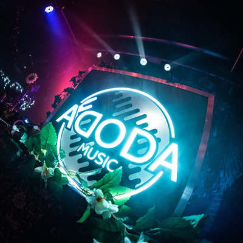
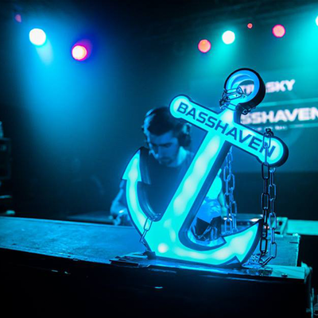

vrijdag
22:45-23:25
Ploegendienst
Ploegendienst trapt graag en hard. Tegen de massa, tegen dichte deuren en tegen OV-poortjes. Letterlijk dan. Figuurlijk is het een band die iedere zaal in zo kort mogelijke tijd wil slopen. Muzikaal zit het ergens tussen 80’s hardcorepunk, oi en trash. De Nederlandstalige teksten gaan vooral over de grote ongemakken des levens: toersistenterreur, kapotte telefoons en het systeem. Compacte, snoeiharde punk nummers die je direct mee wilt schreeuwen. Zanger Ray Fuego (SMIB) laat zich op het podium van zijn beste kant zien.


vrijdag
23:00-03:30
RGB Silent disco | Braaf
Drie meisjes uit totaal verschillende hoeken van de stad bundelen hun krachten tijdens de enige echte afterparty van RAUWKOST festival 2019! In de spiegelzaal van Willem Twee poppodium hebben zij de tofste feest concepten en dj's van de omgeving uitgenodigd op drie verschillende kanalen: Rauw, Groovy, Braaf
vrijdag
23:00-03:30
RGB Silent disco | Groovy
Drie meisjes uit totaal verschillende hoeken van de stad bundelen hun krachten tijdens de enige echte afterparty van RAUWKOST festival 2019! In de spiegelzaal van Willem Twee poppodium hebben zij de tofste feest concepten en dj's van de omgeving uitgenodigd op drie verschillende kanalen: Rauw, Groovy, Braaf

vrijdag
23:00-03:30
RGB Silent disco | Rauw
Drie meisjes uit totaal verschillende hoeken van de stad bundelen hun krachten tijdens de enige echte afterparty van RAUWKOST festival 2019! In de spiegelzaal van Willem Twee poppodium hebben zij de tofste feest concepten en dj's van de omgeving uitgenodigd op drie verschillende kanalen: Rauw, Groovy, Braaf

vrijdag
00:30-01:30